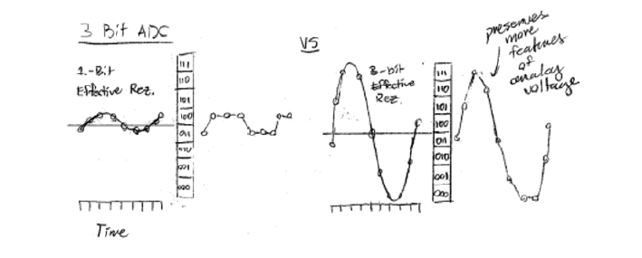
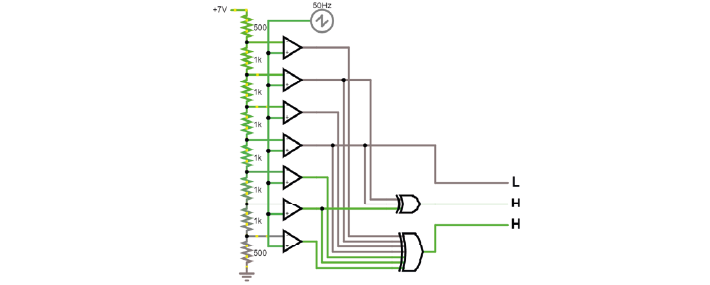
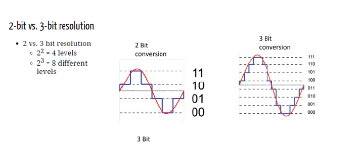

Teori Hari 4#
Digitalisasi#
Tujuan dari digitalisasi adalah mengubah sinyal yang telah diperkuat menjadi nilai digital. Mengapa kita mendigitalkan sinyal saraf? Untuk melindunginya dari noise, serta agar sinyal tersebut dapat diproses dan disimpan.
Pertama, keluaran penguat (Vout) harus sesuai dengan rentang dinamis digitizer. Sinyal analog Anda sebaiknya “mengisi” rentang tersebut semaksimal mungkin, yaitu menggunakan seluruh nilai diskrit yang tersedia dalam rentang digitalisasi. Dengan kata lain, rentang digitalisasi harus sesuai dengan amplitudo maksimum sinyal analog. Jika rentang dinamis terlalu kecil, sinyal akan mengalami saturasi, dan jika terlalu besar, resolusi sinyal yang efektif akan menurun.

Jika Anda memiliki sebuah pembagi tegangan dan op-amp tanpa umpan balik (open-loop, sebagai komparator), Anda sudah dapat membangun rangkaian yang memeriksa apakah sinyal analog berada di atas atau di bawah nilai tertentu. Sekarang, alih-alih satu pembagi tegangan, Anda dapat memiliki sebuah “tangga” (ladder) yang menciptakan nilai-nilai antara, lalu membandingkannya. Ini merupakan cara yang sangat tidak efisien untuk membuat sebuah ADC.
Berikut gambaran rangkaiannya:

Dalam praktiknya, banyak ADC masih menggunakan gagasan dasar yang sama, yaitu menggunakan op-amp sebagai komparator. Namun, alih-alih membandingkan jutaan nilai untuk memperoleh pengukuran yang presisi, ADC menghasilkan tegangan referensi dari DAC internal dan menyesuaikannya hingga cocok dengan tegangan masukan, atau menggunakan trik cerdas lainnya.

Biasanya konverter AD memiliki resolusi 12 hingga 16 bit (4096 hingga 65536 nilai diskrit) untuk sinyal saraf. Hal ini umumnya sudah cukup karena ukuran sinyal yang ingin kita ukur (misalnya spike), serta karena lantai noise termal dari elektroda tipikal sudah sebanding dengan resolusi yang dapat dicapai. Digitizer yang lebih baik hanya akan mengukur lebih banyak noise tersebut. Jika ingin membaca lebih lanjut, silakan lihat di sini.
Talk: Akuisisi dan Sinkronisasi#
Salah satu jebakan paling umum dalam Neurosains adalah melakukan sinkronisasi yang benar pada berbagai aliran data. Bagaimana Anda mengetahui apakah pencitraan (imaging) dan elektrofisiologi Anda selaras dalam waktu? Berapa banyak jam (clock) berbeda yang ada pada sistem Anda, dan mana yang dapat dipercaya?
Kode untuk latihan yang ditunjukkan oleh Filipe tersedia di Google Drive jika Anda ingin mencobanya sendiri.